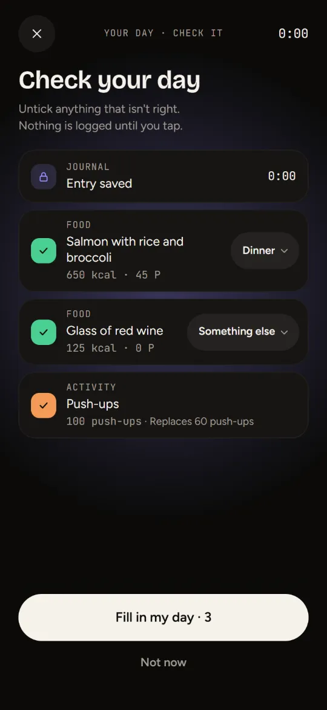
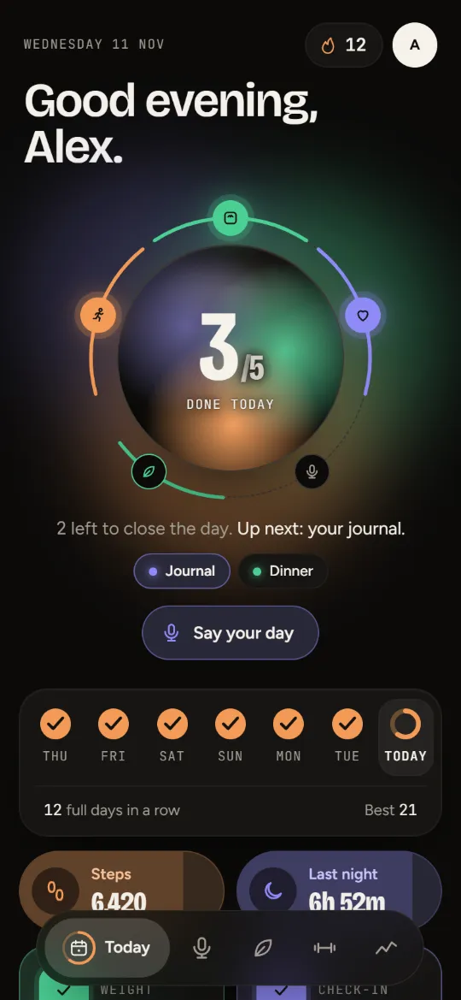
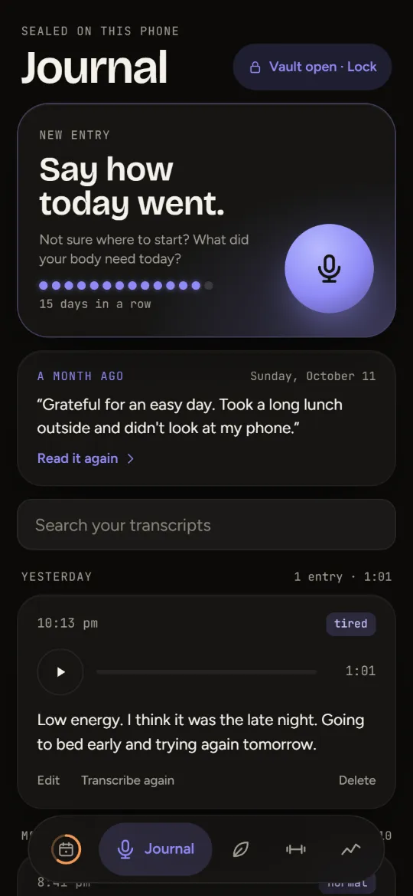
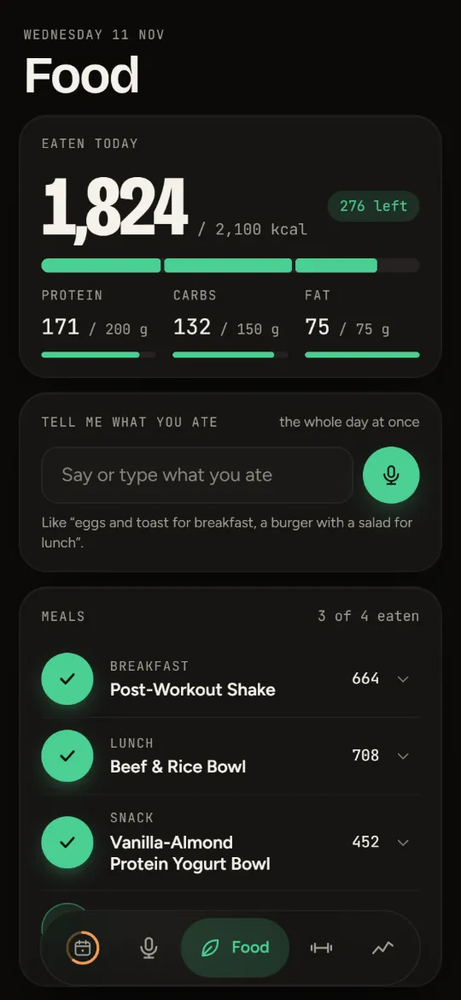
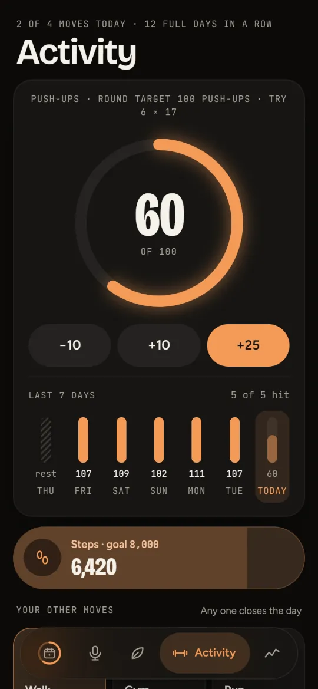
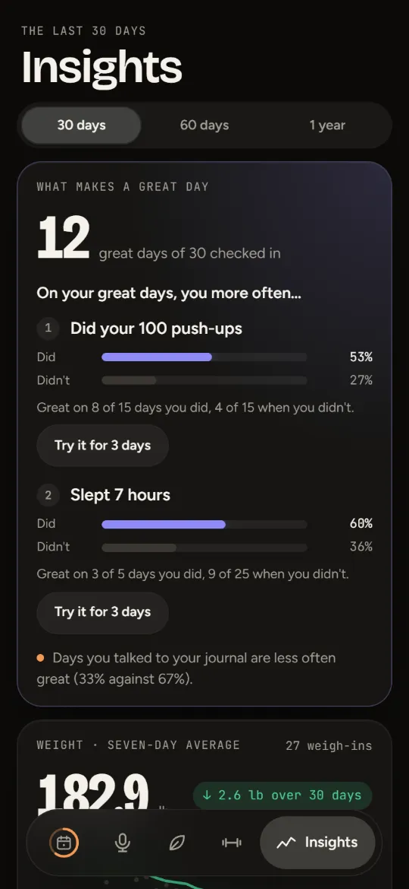
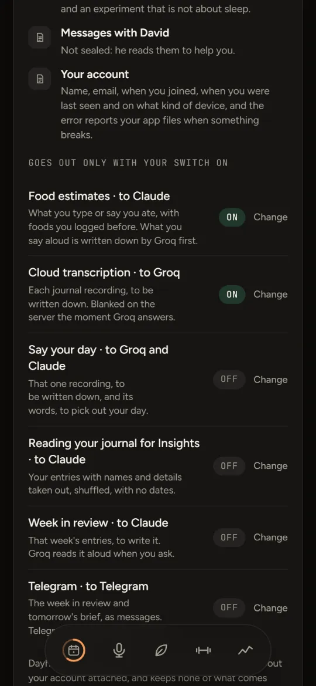

Private beta · Journal · Food · Moves
Say your day in a minute.
Talk it through once and Dayhub fills in your weight, mood, meals and moves for you to check, or tap through them yourself. Then see what makes your good days.
2 left to close the day. Up next: your journal.
Tap the five · drag the orb
Say your day
One recording, the whole day.
Talk through your day once. Dayhub writes it down and picks out what you weighed, how you feel, what you ate and how you moved, and gives you a list to check. Nothing is logged until you tap Fill in my day. The recording itself is your journal entry.
Play a made-up day
Words from Dayhub's sample member, read as Say your day would hear them. No microphone, nothing sent.
Check your day
Untick anything that isn't right. Nothing is logged until you tap.
Filled in.
The entry is already in your journal, sealed like every other.
Say your day is off until you turn it on. That one recording goes to Groq to be written down, and its words go to Claude, which picks out your day. Dayhub sends both under its own key, with nothing about your account, and keeps neither. Your entry is stored sealed, like every other.

Today
Five things close a day. You choose which.
Your weight, a check-in with your mood and habits, a journal entry, your meals and a move, each with its own card on Today. The orb fills with their colours as you go, and closed days make your streak. Switch off what doesn't matter to you: it stays on Today and still works, it just doesn't hold the day open.
What closes your day
Five things close the day.
All five things
At least one thing always counts. For food, you choose which meals.

Journal
A voice journal only you can open.
Tap the Journal card and talk. Before an entry is uploaded, your phone seals it with a key made from your passphrase, so Dayhub's server holds something it cannot read. Nobody else can open your journal, David included. If you forget the passphrase, the recovery code you were shown once lets you choose a new one. Without either, what it protected is gone.
This runs in your browser with Dayhub's own recipe: a key made from the passphrase with PBKDF2-SHA256 at 310,000 rounds, then AES-256-GCM. Nothing you type here leaves this page. Want your words written down too? Switch on transcription: each recording goes to Groq, is deleted from Dayhub's server the moment Groq answers, and the words are sealed into your journal on your phone.

Food
Food, said out loud or tapped.
Your usual meals are one tap each. Had something new? Say it or type it, and Dayhub looks it up: the foods you've logged before first, then an estimate you check before anything is saved. Keep it as your usual, and next time it's one tap. Calorie and protein targets are there if you want them.
What did you have?
Say or type it
Estimated · check it
Oats with berries and a coffee
410 kcal · 14 P · 66 C · 9 F
Estimates come from Claude, and what you say aloud is written down by Groq first. Estimates are on until you switch them off in Settings.

Moves
Moves of your own. Rounds with friends.
Choose what you do: push-ups, a run, a walk, yoga, a swim, a ride, steps, the gym, a sport, or one you name. Each has a daily goal and is logged the way it counts: reps, kilometres, minutes, steps or just done. Any one of them closes the day.
Pick what you do. Any of them closes your day, and one is your main move: Today and Activity lead with it.
Private rounds
Start a round for one kind of move and send its link. Everyone keeps their own target. The other members see your name, your target and how many days you hit it, and nothing else you log.

Insights
See what makes your good days.
Check in with how you feel, and Insights sets your great days beside the rest: on your great days, you more often… Pick one and try it for three days. Dayhub sets those days against your days without it in the two months before, and tells you how it went.
Read
Great on 14 of 24 days you did, 9 of 27 when you didn't.
Three days is a small test. It shows how it went this time, not what causes what.
A great day is one you check in with a good mood. Great days and experiments are worked out on your phone.

What Dayhub can see
Privacy you can see.
One screen in Settings says what is sealed so only you can open it, what Dayhub's server can read, and what goes out and to whom, with your own switches as they are right now. If an admin ever looks at your food, weight or activity, you see when, who, and the reason they wrote down before anything was shown.
1 of 6 things that go out is on
Dayhub sends these under its own key, with nothing about your account attached, and keeps none of what comes back in the clear.
Sealed: only you can open it
Readable by Dayhub's server
No ads, no trackers, nothing sold. Dayhub is a small private beta run by one person, not a company. Read the privacy policy

Also in Dayhub
- Steps and sleepFrom Google Health, if you connect your Fitbit. Read only, and your sleep is sealed like your journal.
- Tomorrow's briefOn Today from 6 pm: tomorrow's calendar and tasks from Morgen and Todoist, if you connect them.
- Week in reviewYour week read back to you, written by Claude, only if you switch it on. Sealed before it is stored.
- On your Home ScreenDayhub runs in your browser. Add it to your Home Screen and it opens like an app, with an evening nudge if you want one.
Private beta
Request an invite.
Dayhub is in a small private beta. Sign up with your email and David lets you in by hand. If a member sent you an invite link, open it and sign up, and you're in at once.